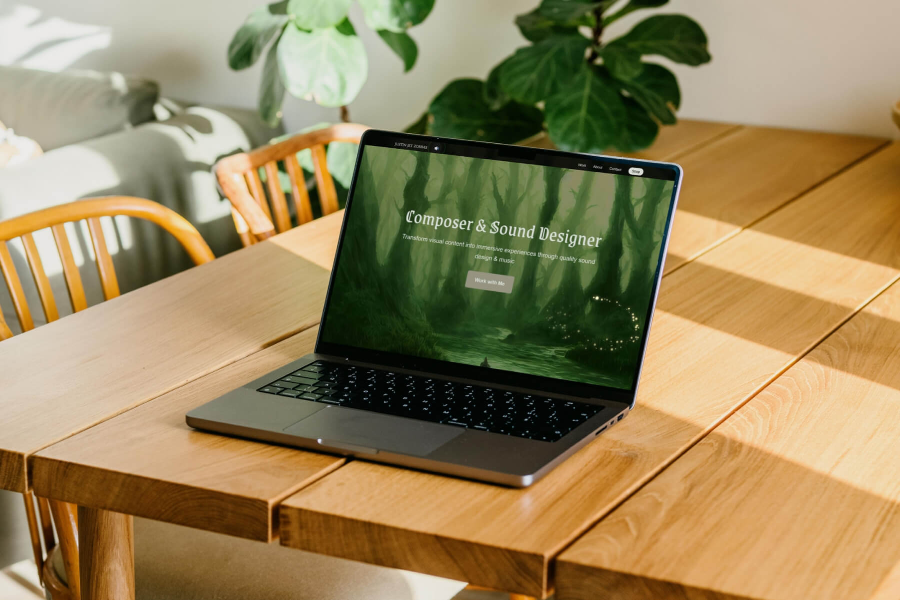
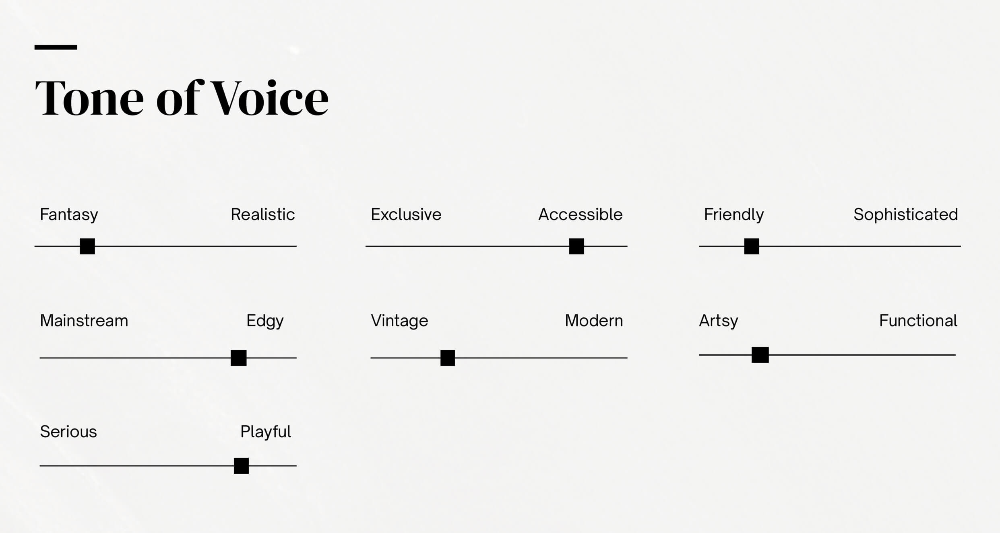
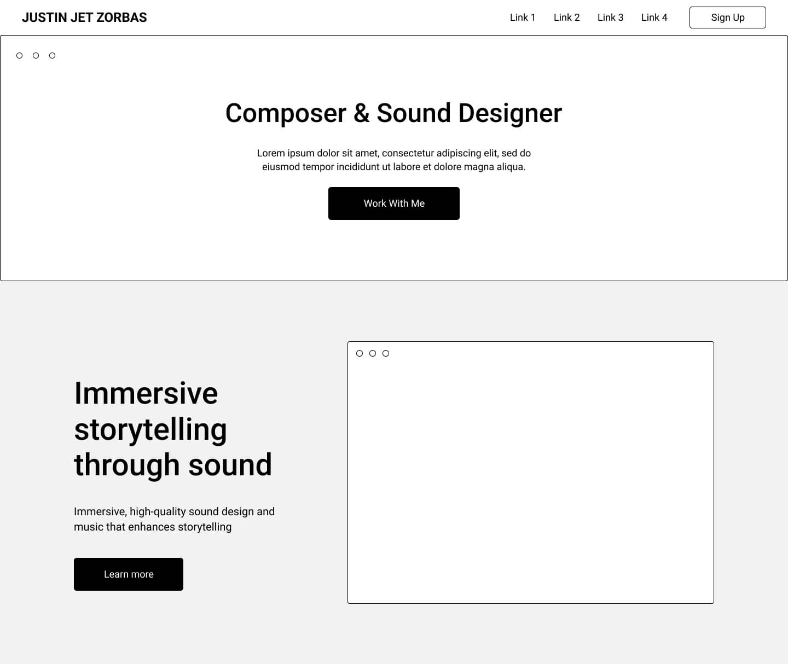
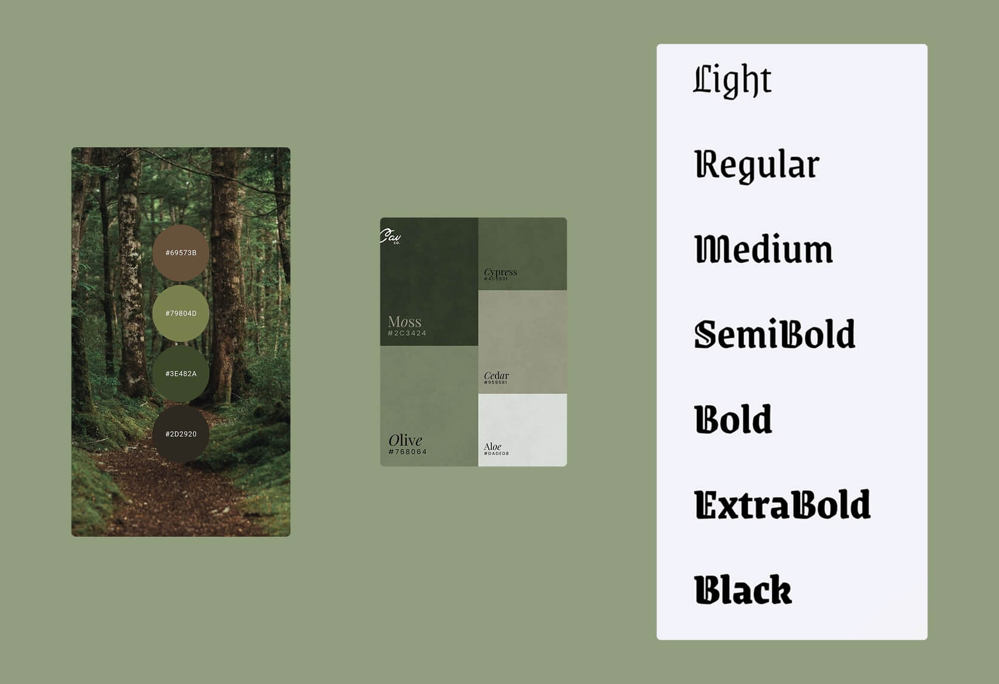
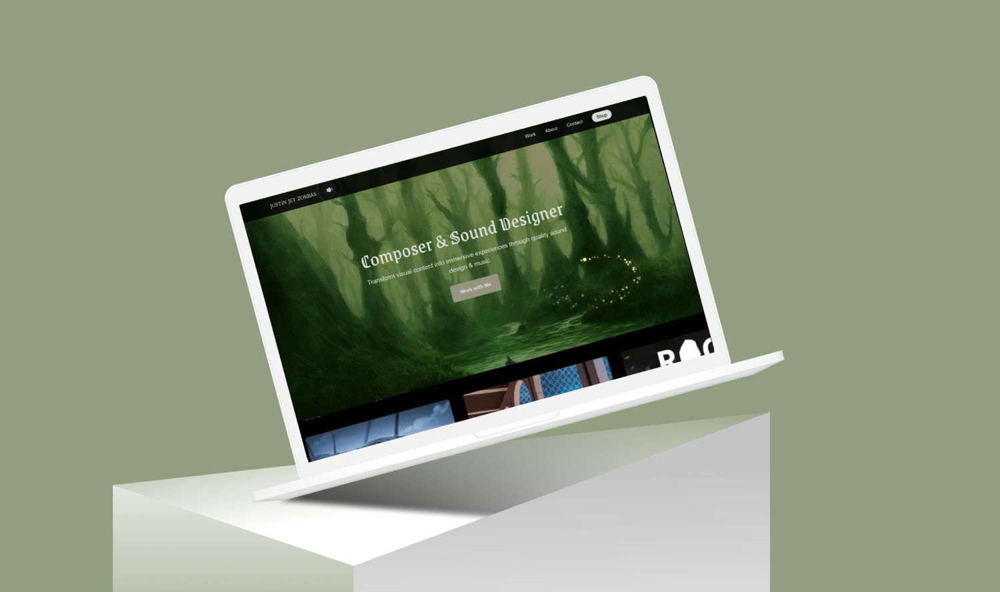
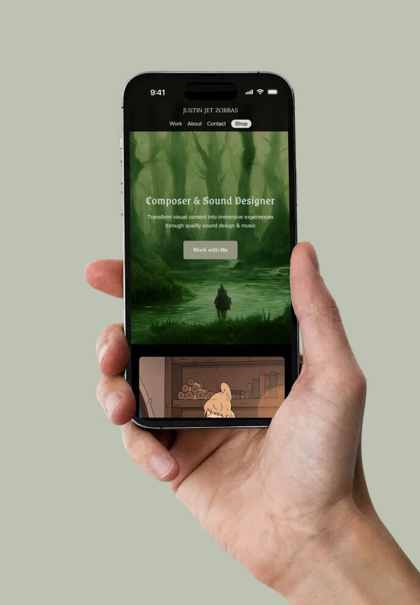
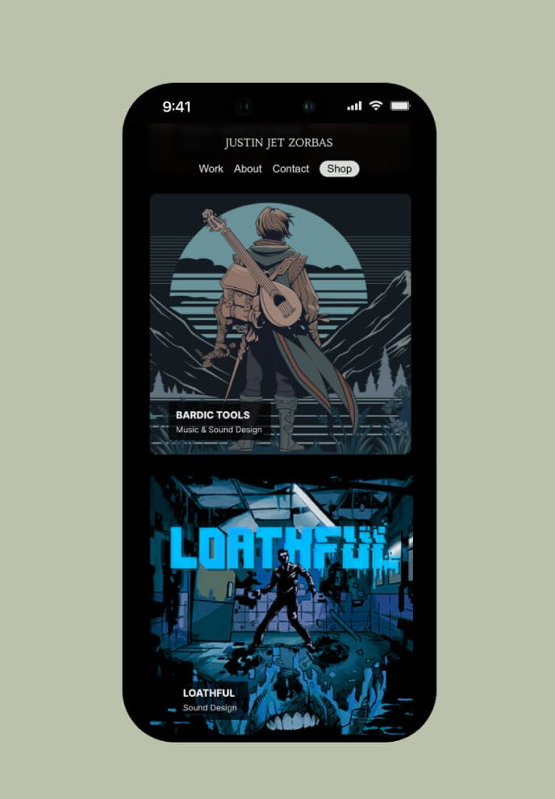
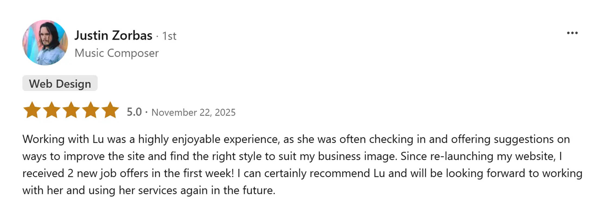

Service: Website Design & Development
Industry: Music & Sound Design
Tools: Figma, Visual Studio Code
Date: Sep 2025 – Nov 2025
I designed and developed an interactive website for Justin, an Australian composer and sound designer, blending storytelling, sound, and motion to reflect his cinematic and atmospheric style.
Justin, an Australian music composer, sound designer, and audio wizard, needed a digital home that didn’t just showcase his work — it had to sound and feel like him. The goal was to craft a cinematic, atmospheric portfolio that drew visitors into his world through storytelling, sound, and sensory immersion.

To understand Justin’s needs for his new website, I needed to dig deeper into his business as a composer and sound designer: What’s his mission? What does he value? What differentiates him from other composers and sound designers? What tone of voice should the site have?

During the ideation stage, I explored website structures that would best showcase Justin’s work and make it easy for users to navigate. I worked closely with Justin to gather his feedback at every step of the design process.

The audio component of the site is an important feature that helps to reflect the soul of Justin’s work. Together, we chose one piece of Justin’s original music to play as looping background ambience that matches the atmospheric style of the homepage.
The project section on homepage features a horizontal scroll that showcases Justin’s projects. A subtle sound effect is triggered when the cursor hovers over each project. The main goal of these interactive and multimedia features is to curate an immersive and cinematic experience as users explore the site.
The colour palette, typography and interaction design of the website reflect the core of Justin’s work, which is strongly influenced by nature and his vivid imagination of a magical world. The main hero image of a forest combined with the ‘firefly’ cursor-hover effect creates the magical atmosphere that represents the style of Justin’s music & audio work.
The choice of Grenze Gotisch as the primary typeface reinforces Justin’s distinct creative style — vintage, atmospheric, and stylised. Its ornamental character adds depth and texture to the site, visually mirroring the layered quality of his soundscapes.

I built and coded the site from scratch, ensuring it performed smoothly across devices. The final version was deployed on GitHub Pages and connected to Justin’s custom domain.

The final solution is an immersive website built upon audio integration and interactivity. To capture Justin’s signature style, his music plays as a looping background track with a toggle button for user control. A custom “firefly” cursor effect subtly echoes the forest ambience of the hero image, enhancing the sensory experience.
The project gallery introduces horizontal scrolling for a cinematic flow, and soft sound effects on hover adds texture to the interactive experience, turning each interaction into a small moment of play.
Visit Website

The new site creates a digital home that resonates with Justin’s target audience and captures the soul of his audio craft.
What I learned through this project experience is the importance of understanding the client and their business — what motivates them, and what makes them unique, and how design language can help express their style and essence. The importance lies not in pixel-perfection, but in the story behind it.

Ready to have a website that actually feels like you? I offer a free 20-minute call to see if we're a good fit.
Book a Free Chat